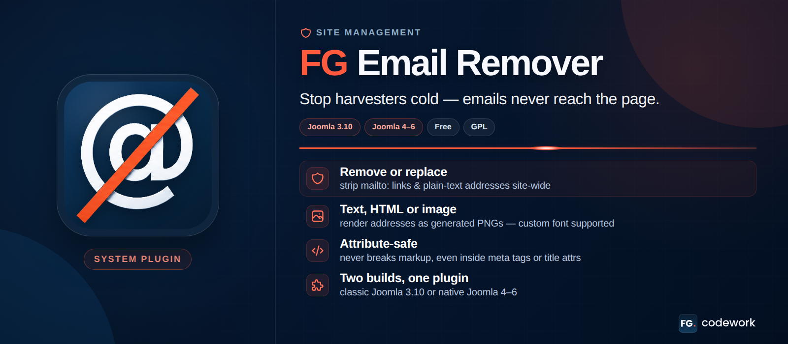
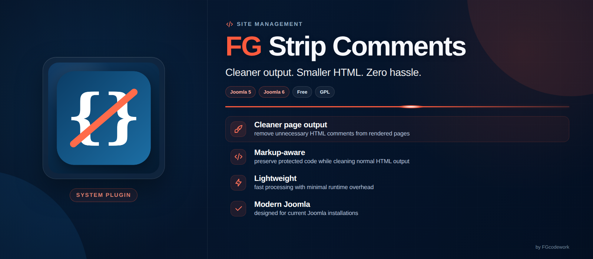
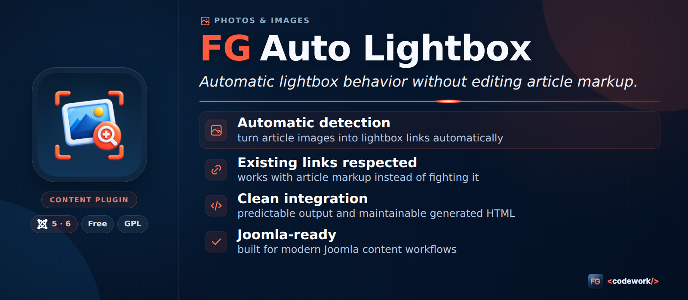
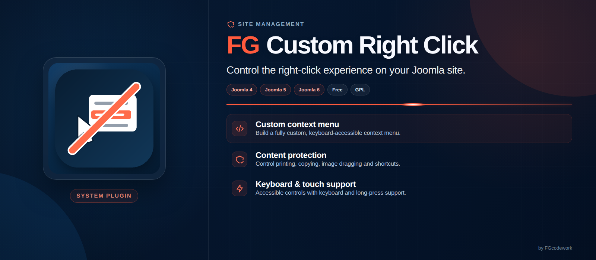
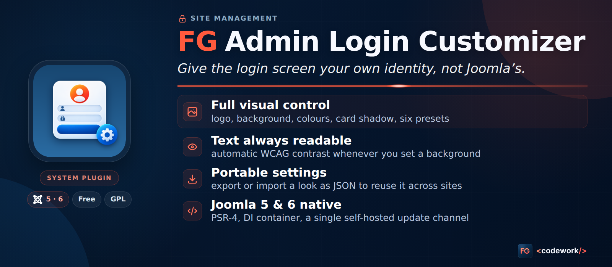
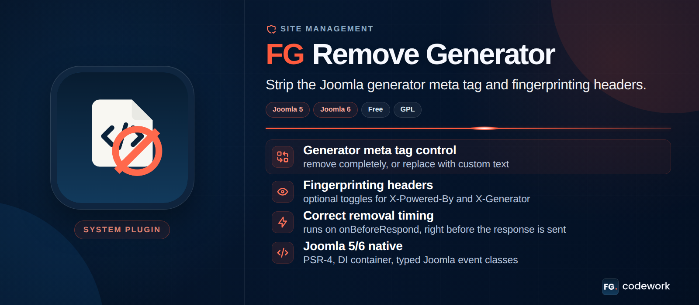
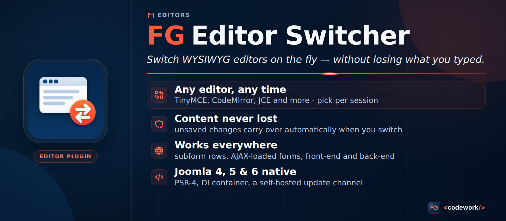
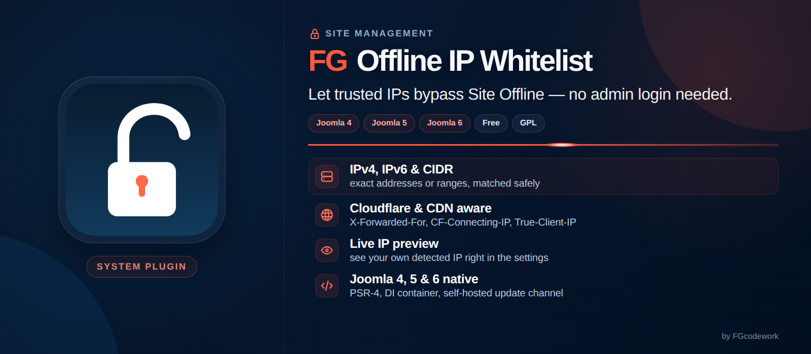

Jednotný HTML/CSS render bannerov v pomere 16:7.

FG Email RemoverStop harvesters cold — emails never reach the page.

FG Strip CommentsCleaner output. Smaller HTML. Zero hassle.

FG Auto LightboxAutomatic lightbox behavior without editing article markup.

FG Custom Right ClickControl the right-click experience on your Joomla site.

FG Admin Login CustomizerGive the login screen your own identity, not Joomla’s.

FG Remove GeneratorStrip the Joomla generator meta tag and fingerprinting headers.

FG Editor SwitcherSwitch WYSIWYG editors on the fly — without losing what you typed.

FG Offline IP WhitelistLet trusted IPs bypass Site Offline — no admin login needed.